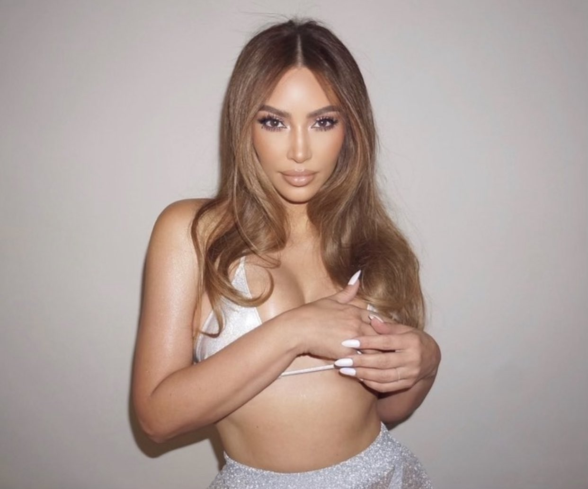

Kimberly Noel Kardashian West[3][4] (born October 21, 1980) is an American media personality, socialite, model, businesswoman, and actress. Kardashian first gained media attention as a friend and stylist of Paris Hilton but received wider notice after a 2002 sex tape, Kim Kardashian, Superstar, with her then-boyfriend Ray J was released in 2007.[5] Later that year, she and her family began to appear in the E! reality television series Keeping Up with the Kardashians (2007–2021). Its success soon led to the creation of the spin-off series Kourtney and Kim Take New York (2011–2012) and Kourtney and Kim Take Miami (2009–2013).
Kimberly Noel Kardashian West[3][4] (born October 21, 1980) is an American media personality, socialite, model, businesswoman, and actress. Kardashian first gained media attention as a friend and stylist of Paris Hilton but received wider notice after a 2002 sex tape, Kim Kardashian, Superstar, with her then-boyfriend Ray J was released in 2007.[5] Later that year, she and her family began to appear in the E! reality television series Keeping Up with the Kardashians (2007–2021). Its success soon led to the creation of the spin-off series Kourtney and Kim Take New York (2011–2012) and Kourtney and Kim Take Miami (2009–2013).
Kardashian has developed an online and social media presence, including hundreds of millions of followers on Twitter and Instagram.[6][7][8] She has released a variety of products tied to her name, including the 2014 mobile game Kim Kardashian: Hollywood, a variety of clothing and products, the 2015 photo book Selfish and her eponymous personal app. Her relationship with rapper Kanye West has also received significant media coverage; the couple married in 2014 and have four children together.[9] As an actress, Kardashian has appeared in the films Disaster Movie (2008), Deep in the Valley (2009), and Temptation: Confessions of a Marriage Counselor (2013).
In recent years, Kardashian has focused on her own businesses by founding KKW Beauty and KKW fragrance in 2017.[10] In 2019, she launched Skims which was previously called Kimono but the name was changed due to immediate backlash.[11] Kardashian has also become more politically active by lobbying president Donald Trump for prison reform and lobbying for Alice Marie Johnson to be granted clemency.[12] She is also planning to become a lawyer by doing a four-year law apprenticeship that is supervised by the law firm #cut50 at which Van Jones is a partner.[13][14]
Time magazine included Kardashian on their list of 2015's 100 most influential people. Both critics and admirers have described her as exemplifying the notion of being famous for being famous.[15][16][17] She was reported to be the highest-paid reality television personality of 2015, with her estimated total earnings exceeding US$53 million.[18]